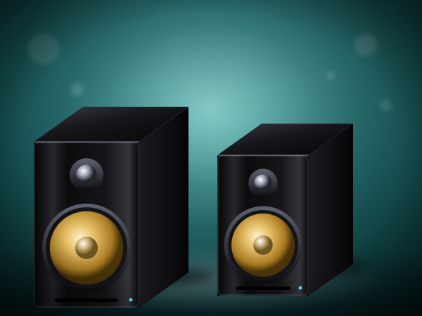
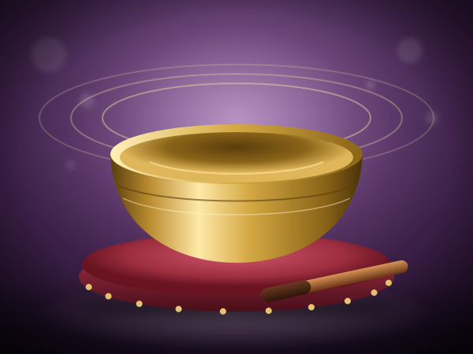
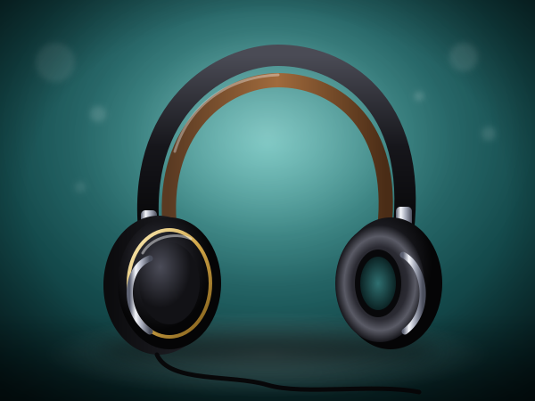
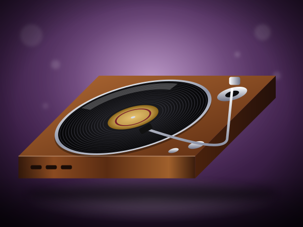

Echo Dot Smart Speaker
Smart speaker for streaming music. Listening is part of a musician's life.
I suggest it for streaming music around the house; it is not a monitor for a piano.
Check today's price on AmazonLeave your email, phone and how you found us. I read every message and listen to every recording myself.
Home / Shop / Music and Wellbeing
Chosen by a concert pianistFor people who live with music, the best gear is good listening gear: headphones, a turntable or speakers, plus a book on music and the brain. I make no medical claims; these simply help you listen.
Affiliate disclosure. As an Amazon Associate I earn from qualifying purchases. Some links on this page are affiliate links; buying through them costs you nothing extra.
Links go to Amazon.com; Amazon ships many items internationally.
Illustrations show the type of product; see the exact item and its photos on Amazon.
Music is not only something we practice. It is also something we live with: a record on in the evening, good headphones on a train, a book that explains why a melody moves us. This page gathers listening gear and reading that I think suit people who love music. I make no medical claims here, and none of it replaces practice at the piano.
This page belongs to the Online Piano University shop because the people who learn with me, in my free 41-lesson course and later with my upcoming method books, are also the people who love music, and they are often the ones receiving or giving these gifts.
How this helps you learn: listening is part of a pianist's education, and living with music keeps the reason you started alive.

Smart speaker for streaming music. Listening is part of a musician's life.
I suggest it for streaming music around the house; it is not a monitor for a piano.
Check today's price on Amazon
The listing says singing bowl set for sound practice. A good way to live with music.
I suggest it for a quiet moment of listening before or after practice.
Check today's price on AmazonIn short, brass singing bowl set. Choose what you will really switch on.
I suggest it for a quiet moment of listening before or after practice.
Check today's price on AmazonBook on music and the brain. Music belongs in the evening as well as the practice hour.
I suggest it for a music lover who reads, or a teacher's bookshelf.
Check today's price on AmazonListening is part of a musician's life. Here: book on music and the brain.
I suggest it for a music lover who reads, or a teacher's bookshelf.
Check today's price on AmazonIn short, book on music and the brain. A good way to live with music.
I suggest it for a music lover who reads, or a teacher's bookshelf.
Check today's price on Amazon
The listing says noise-cancelling wireless headphones. Choose what you will really switch on.
I suggest it for listening on a plane, a train or in a busy home, rather than piano practice.
Check today's price on AmazonMusic belongs in the evening as well as the practice hour. Here: noise-cancelling wireless headphones.
I suggest it for listening on a plane, a train or in a busy home, rather than piano practice.
Check today's price on AmazonPortable waterproof Bluetooth speaker. Listening is part of a musician's life.
I suggest it for music on the go; it is not a speaker for a digital piano.
Check today's price on AmazonThe listing says portable Bluetooth speaker. A good way to live with music.
I suggest it for music on the go; it is not a speaker for a digital piano.
Check today's price on Amazon
In short, fully automatic belt-drive turntable. Choose what you will really switch on.
I suggest it for a music lover with a record collection, or one who is starting one.
Check today's price on AmazonWi-Fi/Bluetooth smart speaker. Music belongs in the evening as well as the practice hour.
I suggest it for streaming music around the house; it is not a monitor for a piano.
Check today's price on AmazonListening is part of a musician's life. Here: singing bowl set.
I suggest it for a quiet moment of listening before or after practice.
Check today's price on AmazonIn short, direct-drive turntable with USB output. A good way to live with music.
I suggest it for a music lover with a record collection, or one who is starting one.
Check today's price on AmazonThe listing says direct-drive turntable with Bluetooth and USB. Choose what you will really switch on.
I suggest it for a music lover with a record collection, or one who is starting one.
Check today's price on AmazonMusic belongs in the evening as well as the practice hour. Here: crystal singing bowl.
I suggest it for a quiet moment of listening before or after practice.
Check today's price on AmazonNoise-cancelling models suit travel and busy rooms; the listings below describe which ones offer it. For piano practice I prefer wired studio headphones.
Listening to recordings is part of a musician's education, and a turntable is one pleasant way to do it.
They make sound and are used in sound practice. They are not a substitute for learning an instrument.
The books listed here discuss music and the brain; pick the subject that interests you.
Music gifts for adults who love to listen.
Practice any hour without disturbing anyone.
Gifts, textiles and decor with a musical touch.
The shop exists to support your learning. The learning itself can start free: all 41 lessons of my beginner course are published, and I give feedback on your playing at no charge. When you want a teacher, I take private students online.
▶ Start the free 41-lesson course Private online lessons Send me your playing for feedback → Give online piano lessons
Send a message or attach a recording. Email, phone and how you found us help me answer you properly.
The first steps to start the right way — no bad habits to un-learn. Join fellow beginners learning with a real university teacher.
✓ Thank you — check your inbox!
No spam — just piano. Unsubscribe anytime.
Every decade brings its own music and its own obstacles. Find the plan for yours:
Learn piano in your 20s · Learn piano in your 30s · Learn piano in your 40s · Learn piano in your 50s · Learn piano in your 60s · Learn piano in your 70s and beyond
Online Piano University is run by one teacher. I read every message and listen to every recording myself.
Contact
maria@onlinepianouniversity.com
Full contact page
Feedback on your playing
Free 41-lesson course
Piano lessons by age
Free Starter Guide
✓ Thank you — check your inbox!
Follow along